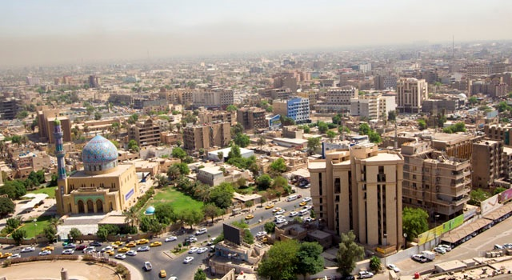
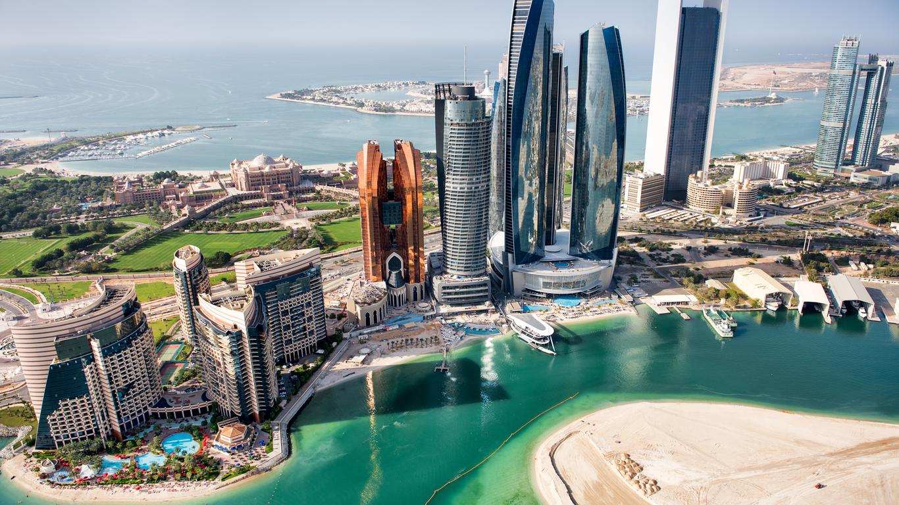

The Middle East is responsible for 27% of the global production of oil (1). Furthermore, the Middle East has 5 of the top 10 oil-producing countries. This includes Saudi Arabia, Iraq, the UAE, Iran, and Kuwait.
Saudi Arabia has 12% of the global output of oil and is the largest petroleum exporter (1). Due to its high output and low costs, it is expected that Saudi Arabia will remain one of the top oil producers in the future. Saudi Aramco is the group that controls the oil and gas industry in Saudi Arabia and is a state-owned company. While no international oil companies have any production in Saudi Arabia, Saudi Aramco has partnerships with Exxon Mobil, Royal Dutch Shell PLC, Sumitomo Chemical Co., and Total S.A. through refineries and petrochemical plants.
Iraq is next on our list, as it is the world's sixth-largest oil producer. It has seen a large increase in production after the Iraq War (1). However, it has a long way to go as it currently is politically unstable, still has violence in the area, and doesn’t have sufficient infrastructure to support further production. The Ministry of Oil in Baghdad is in control of the country’s oil production which is run by many state-owned companies such as North Oil Company, the Midland Oil Company, the South Oil Company, and the Missan Oil Company. In the Kurdistan region of Iraq, the local Ministry of Natural Resources controls oil production. Many international oil companies are involved with Iraq’s oil production. Exxon Mobil, Occidental Petroleum, BP, Royal Dutch Shell, and Total S.A. are the major US and European oil companies that are tied to Iraq. The other countries that are involved are China and Malaysia, so Iraq has some strong ties to some powerful countries.
The next largest oil producer in the Middle East is the UAE with an output of 4 million barrels per day of oil (1). It is the 7th largest oil producer in the world and is a federation of 7 emirates with each emirate controlling the production of oil, but Abu Dhabi has the largest oil reserve. This makes it the center for all the federation’s oil processes. The Abu Dhabi National Oil Company (ADNOC) is the main group that controls oil production in Abu Dhabi and is state-owned. It, as well as the other emirates, uses a similar deal with international oil companies. The same international companies that have partnerships with Saudi Arabia have these production-sharing agreements with the UAE.
From these few examples we can see that many large oil producing countries can be located within the region, and we can see that they have very similar structures to how oil is controlled. With this project we hoped to find out more about how oil has effected these middle Eastern countries, especially since we can see that they are tied to many international companies and large countries like the US and China as well as countries in Europe. Furthermore, oil is a major source of wealth that stimulates economies and provides civilizations to grow. From here we now move on to a few case studies within the Middle East to get a better picture of how oil has changed these countries.